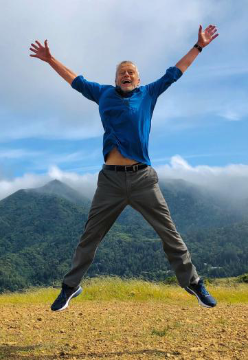
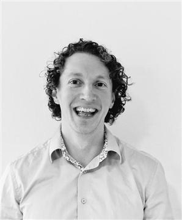
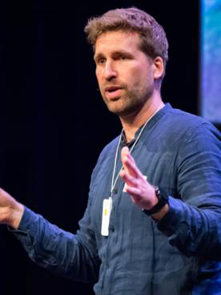

Applied Psychophysiology & Biofeedback · 4 ECTS · Blended Learning · Reykjavík University
This 4 ECTS blended course provides a comprehensive introduction to the interdisciplinary field of Applied Psychophysiology and Biofeedback. It equips students with both theoretical foundations and practical competencies in measuring, interpreting, and applying psychophysiological signals — primarily Heart Rate Variability (HRV) — to improve mental and physical performance, well-being, and clinical outcomes.
The course begins with a wide-angle lens on applied psychophysiology, introducing students to various tools and approaches, including HRV, neurofeedback, interoception training, and emerging bio-sensing technologies. During the 5-day on-site intensive, students work in interdisciplinary teams to collect psychophysiological data, experience multiple intervention components, and run a small team experiment. The course culminates with a capstone project.
Upon successful completion, students will be able to:
| Week | Dates | Format | Focus |
|---|---|---|---|
| 1 | 21–26 May | Online + team setup | Course orientation · Overview of applied psychophysiology · Start HRV training |
| 2 | 27–31 May | Online (sync + async) | Team teaching · Continue HRV training · Online session |
| 3 | 1–5 June | On-site intensive | HRV training Week 3 · Applied labs · Team experiment · Guest teaching |
| 4 | 6–10 June | Online | Data analysis · Daily HRV practice · Team meetings · Draft capstone report |
| 5 | 11–17 June | Online | Capstone presentations and submissions · HRV integration and final reflection |
Dr. Sigrún Þóra Sveinsdóttir is a licensed psychologist, researcher, and educator specializing in psychophysiology, mental resilience, and heart rate variability (HRV) biofeedback. She holds a PhD in psychology, with doctoral research focusing on how autonomic regulation shapes cognitive performance, resilience, and functioning under stress. Her work bridges scientific research and applied practice, integrating HRV biofeedback into clinical, occupational, leadership, and performance-based settings, including work with police officers and individuals experiencing chronic stress, trauma, and long-term health conditions. She has held senior roles across healthcare, public health, and governmental systems, and actively publishes and presents international research within applied psychophysiology and biofeedback.
sigrunths@ru.isDuring the on-site intensive week, selected guest experts contribute specialized teaching aligned with the course objectives.

Dr. Erik Peper is an international leading figure in biofeedback and applied psychophysiology. With decades of experience as a researcher, educator, and clinician, he has helped shape modern biofeedback practice worldwide. He is a former President of the Association for Applied Psychophysiology and Biofeedback, and current President of the Biofeedback Federation of Europe. Dr. Peper has authored numerous scientific articles and books on biofeedback, breathing, posture, stress regulation, and health optimization — including TechStress: How Technology is Hijacking Our Lives and the forthcoming Cancer Reconsidered. His teaching is internationally recognized for translating complex psychophysiological principles into practical, life-changing skills.

Dr. John Hasslinger is a researcher and educator specializing in neurofeedback and psychophysiological self-regulation. His work focuses on both experimental and applied investigations of neurofeedback protocols, brain regulation, and cognitive performance. He brings advanced expertise in neurofeedback methodologies and their integration within broader psychophysiological training frameworks, contributing to the development of evidence-based approaches for enhancing self-regulation in research, clinical, and applied performance settings.

Dr. Floris Klumpers is a researcher working at the intersection of heart rate variability (HRV) biofeedback, immersive virtual reality, and stress–performance training. His work includes the development, implementation, and evaluation of VR-supported HRV biofeedback interventions designed for high-stress professional environments, including police training. His research emphasizes innovative, technology-enhanced applications of applied psychophysiology, with a strong focus on preparing individuals to perform effectively under pressure.